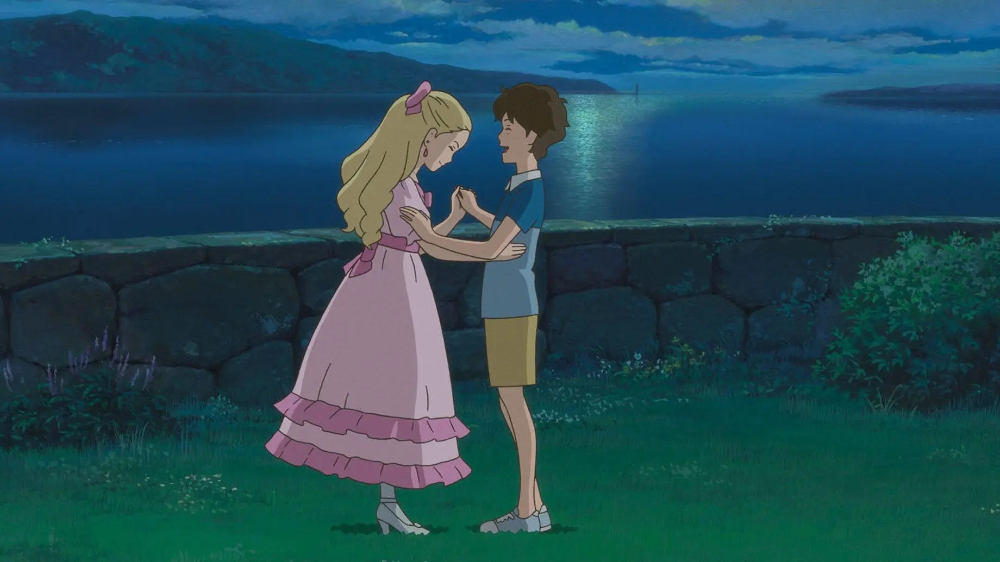

When Marnie Was There思い出のマーニー (Omoide no Marnie)Release Year2014DirectorHiromasa YonebayashiProducerYoshiaki NishimuraRunning Time103 minsRT Score⭐ 92%The film follows Anna Sasaki living with her relatives in the seaside town. Anna comes across a nearby abandoned mansion, where she meets Marnie, a mysterious girl who asks her to promise to keep their secrets from everyone. As the summer progresses, Anna spends more time with Marnie, and eventually Anna learns the truth about her family and foster care.Characters (0)No character information available for this film.Additional InformationLocations (0)NoneSpecies (1)HumanVehicles (0)None